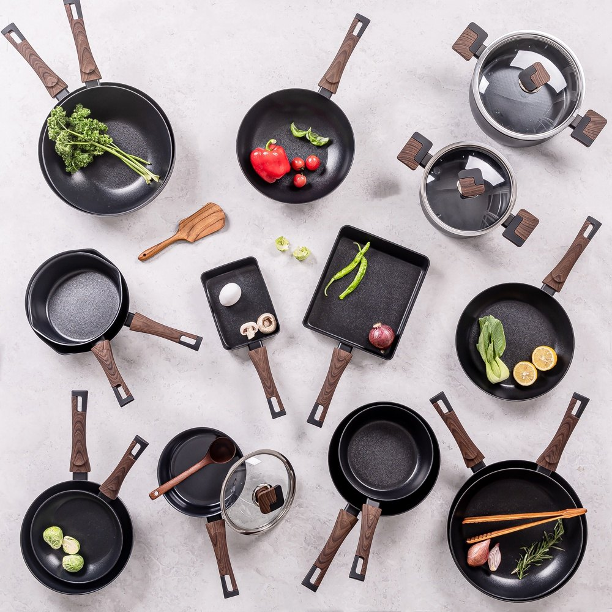
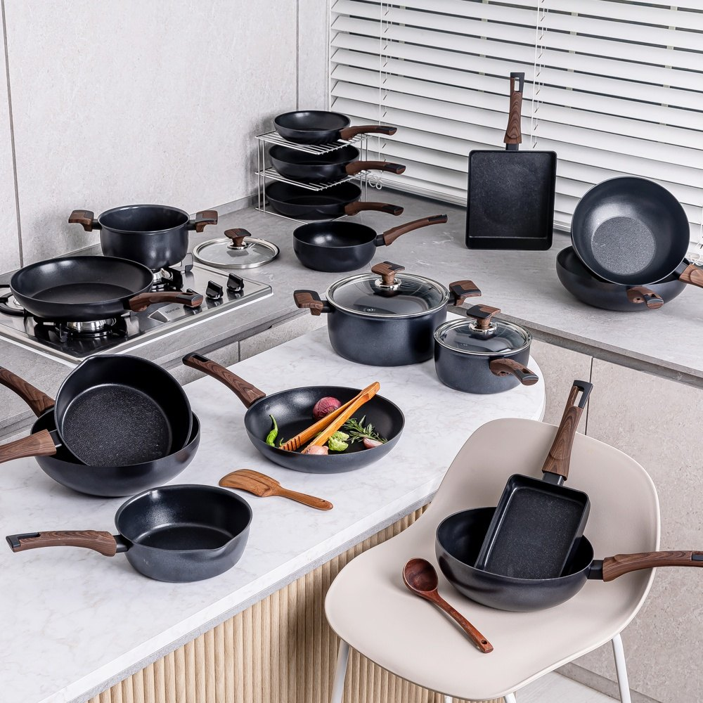
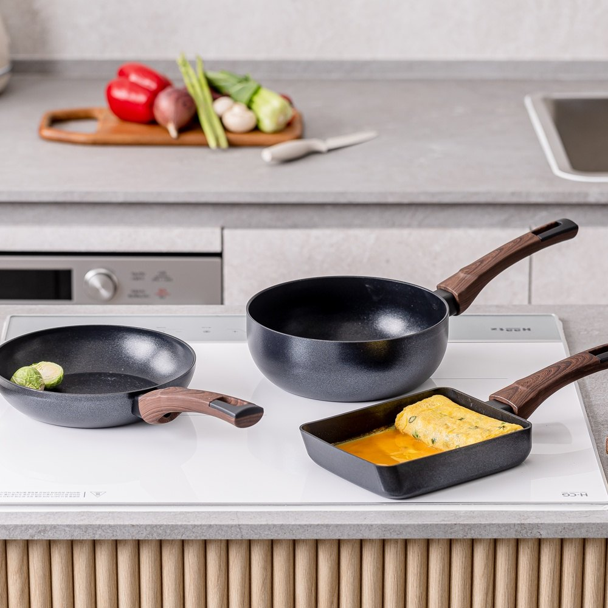

Silvart Carino Square Egg Pan Review at a Glance
This Silvart Carino square egg pan review looks at a small Korean pan built for one job and done well: gyeran-mari (계란말이), the rolled omelet you see in Korean lunchboxes. Silvart (실바트) is a Korean cookware brand, and its Carino line pairs a dark stone-look non-stick coating with a wood-look handle.
The 18cm square pan works on induction and gas, needs very little oil, and in Korea it's usually sold as a 1+1 set.

Why a Square Pan?
A round pan makes a rolled omelet with thin, uneven ends. A square pan gives you straight edges and even layers, so every slice looks neat. It's also the right size for one or two fried eggs, a few sausages, or a grilled-cheese sandwich, with less oil and less to wash than a big skillet.

Key Details
| Item | Details |
|---|---|
| Brand | Silvart (실바트) · Korea |
| Product | Carino square egg pan (까리노 사각 프라이팬) |
| Size | 18cm square |
| Set | Sold as 1+1 in Korea |
| Coating | High-concentration non-stick (marketed as 30× a regular pan) |
| Cooktops | Induction and gas |
| Handle | Wood-look handle |


Photo note: These are 5 real product photos from the Korean listing. We didn't add any AI-generated images.
How to Make Gyeran-mari in It
- Beat 3–4 eggs with a pinch of salt. Add finely chopped green onion and carrot if you like.
- Heat the pan on medium-low and wipe on a few drops of oil with a paper towel.
- Pour in a thin layer. When it's half set, roll it from the far edge toward you.
- Push the roll back, pour another thin layer, lift the roll so egg flows under it, and roll again.
- Repeat, then let it rest for a minute before slicing.
Care Tips for a Coated Pan
- Use low to medium heat. High heat on an empty pan wears down any coating.
- Use silicone or wooden spatulas, not metal.
- Let it cool before washing, then use a soft sponge.
Pros & Cons
✅ Pros
- Square shape makes neat Korean rolled omelets.
- Slippery coating that needs very little oil.
- Works on induction and gas.
- 1+1 set: one for eggs, one for everything else.
⚠️ Cons
- Only 18cm, so it's for small portions.
- A bit heavier than thin budget pans.
- Coated pans need gentle heat and tools to last.
Who It Suits (and Who Should Skip It)
- Great for: Anyone who wants to make Korean gyeran-mari or tamagoyaki at home.
- Great for: Small households and quick breakfasts on an induction hob.
- Maybe skip: If you cook for a big family, or prefer bare stainless steel or cast iron.
Silvart Square Pan FAQ
What is the Silvart Carino square pan?
It's an 18cm square frying pan from the Korean cookware brand Silvart (실바트). In Korea it's sold as a 1+1 set and is mainly used for gyeran-mari (Korean rolled omelet), fried eggs and small breakfasts.
Does it work on induction?
Yes. The Korean listing says it works on induction cooktops as well as gas stoves.
How non-stick is it?
Silvart markets a high-concentration coating that it says is 30 times denser than a regular pan's. Buyers say eggs slide off with very little oil. Like any coated pan, use medium heat and silicone or wooden tools to keep the coating in good shape.
Is it heavy?
It's a little heavier than a cheap thin pan, which helps it heat evenly. Some buyers mention the weight, so keep that in mind if you prefer a very light pan.
Square Tamagoyaki Pans
Silvart isn't widely sold on US Amazon. Browse similar square non-stick induction egg pans.